Get in touch
yanlingx0919@gmail.com
I teamed up with two classmates designing Sun Smart wearable product and its associated mobile application starting September 2017. The team focused on exploring problem space, discovering user needs and creating useful solutions and delightful experience. Up until December 2017, I led efforts in conducting user interviews, defining high-level requirements, making 3-D paper prototypes, creating mobile application wireframes, and refining hi-fi prototypes.
Despite the steady increase in sun-care market in the United States, skin cancer risks due to overexposure to ultraviolet(UV) radiation from the sun remain high. Most consumers have limited knowledge on how to get enough and effective protection from using sunscreen. When consumers do wear sunscreen, they often apply too little or fail to reapply when needed.
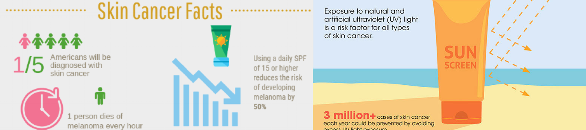High Skin Cancer Risks Due to Over Sun Exposure
In order to promote better sun protection practices, we designed Sun Smart - a lightweight, solar-powered wearable device containing a sensory chip that detects UV radiation and monitors users' real-time UV exposure. The monitor alerts users before the measured UV exposure approaches a damaging limit. The wearable can be used in different forms including a clip, a bracelet or a necklace based on different activity needs. The wearable can be used on its own or be companied with a mobile application that allows users to receive notifications through different forms.
Screens of Mobile and Watch Interfaces
To better understand the problem space and unconveniences people face with sun protection in their daily life, I kicked off my research on looking into what are already out there, understanding user needs and finding out what kind of technology can be leveraged into the solution.
By conducting extensive literature review, we found out that many people have inadequate information about how to effectively protect themselves from UV radiation, and struggle to incorporate sun protection into their daily routine. Technology can help improve people's sun protection habits. April Armstrong's (2009) experiment showed that text-message reminders can promote more frequent sunscreen use. The literature review findings supported our idea of creating a certain kind of reminder for users.
We conducted 12 interviews in total asking about outdoor activities, sun protection habits and motivations for sun protection. We originally generated two composite personas from our interviews: Amanda Peters, a young woman focused on her own sun protection practices; and Catherine Chang, a mother concerned about her children's sun protection.
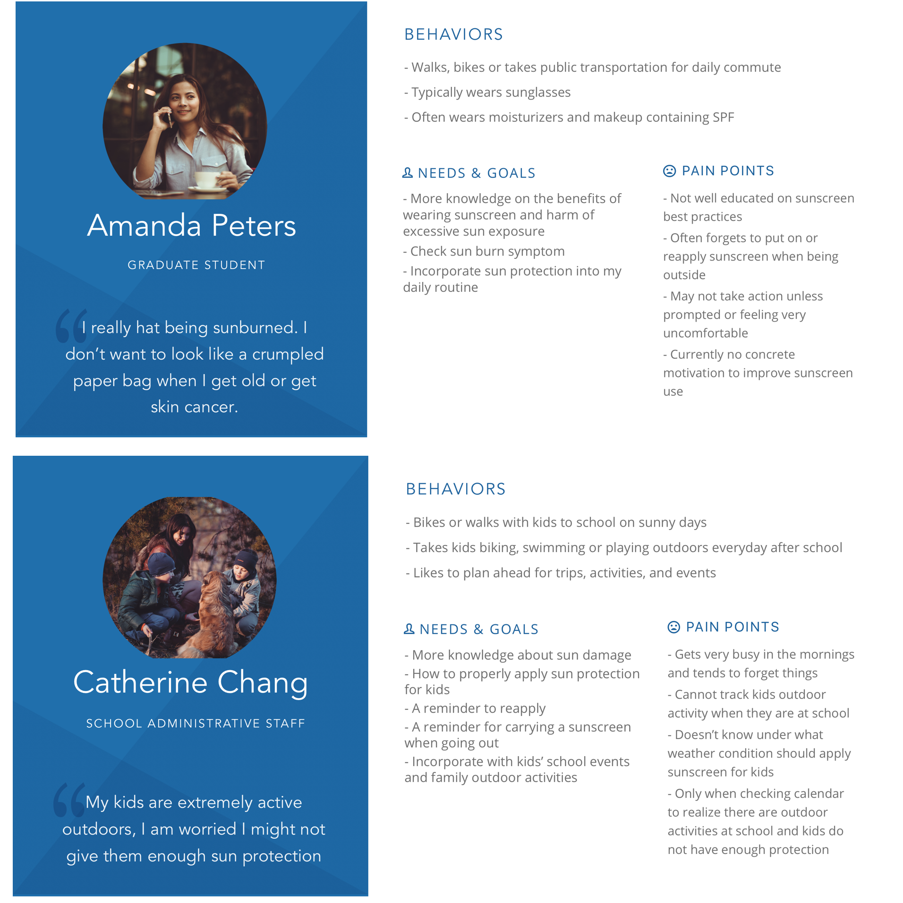Primary Personas
Based on the interviews, I collected some key product functions our interviewees mentioned. Starting from those functions, I found several products on market as competitors. After comparison, we concluded that the necessary functionalities to incorporate sun protection into daily life are distributed in different products. We found out that though smart sun protection product has been a trend in sun care market, current products still have relatively narrow scope and have common problems in usability and user experiences.
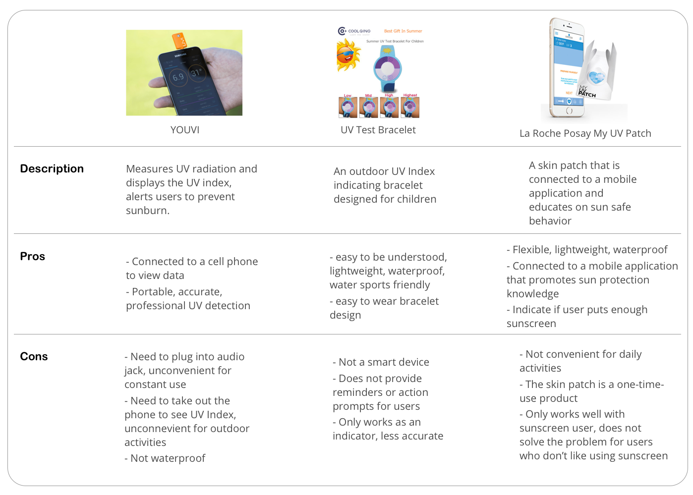Current Consumer UV Detecing Products Comparison
To start off the design process, we came up with context scenarios for both personas Amanda and Catherine in the form of story boards. When looking into both context scenarios, we found out that while both personas have common problems and needs for a smart UV detecting and reminding product, there are some big implications in terms of designing the overall product and expereince depending on whether it's targeting a single user or a caretaker and children. After careful consideration, we decided to start from focusing on one persona - the single user Amanda.
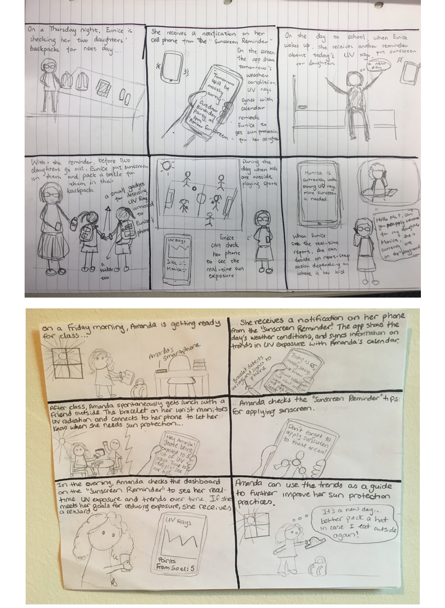Catherine's and Amanda's Storyboards
To further understand how users can incorporate our solution, we dived deeper in uderstanding our primary persona Amanda who is a young, busy woman in her late 20s and is motivated to use our products to improve her sun protection habits. In addition to the general storyboard created for Amanda, we broke down her use cases into goals, features users want to have, and potential product functions. Furthermore, product functions are mapped to satisfy both functional needs and emotional needs.
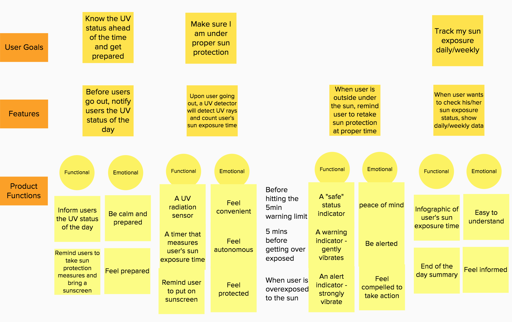Story Mapping: User Goals & High-level Requirements
After mapping out user goals and needs, we concluded that the most important features should be accurate UV radiation detection, accurate timer, easy-to-interact and non-disturbing reminders, easy-to-understand data summary and lightweight portable tracker. Therefore, we decided to design a combination of a portable smart gadget and a mobile application as it is the best way to synthesize these features together. I summarized our design framework in the following table.
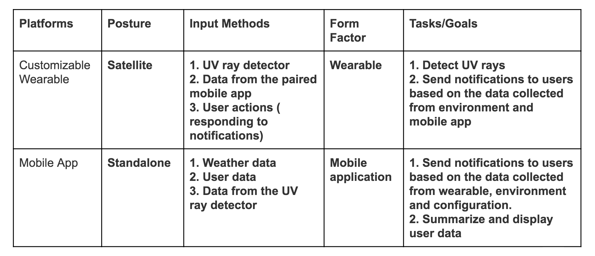Sun Smart Product Design Framework
To conceptualize what Sun Smart wearable would look like and be used, we did braindrawing as a group and discussed our ideas to finalize the product form.
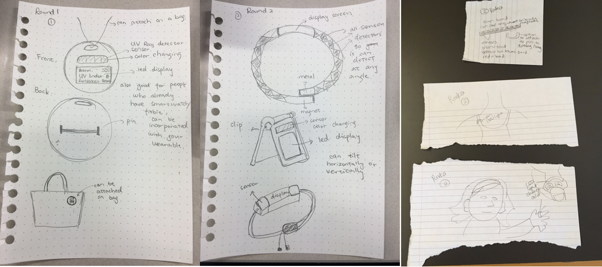Braindrawing Drafts
We decided not to create the wearable in a ring form because the ring would be too small to show useful information. Rings are also hard to be securely fastened to one's bag or clothing. We were also aware of the fact that many people already have wristbands like fitbits or smart watches, therefore, we decided to make the wearable to be easily used in different forms, it can be worn as a wristband and the main information component can be detached and be used as a clip that can be easily and securely attached to clothing or bags when going out. We came up with an initial design of the wearable component and made a rough physical prototype.
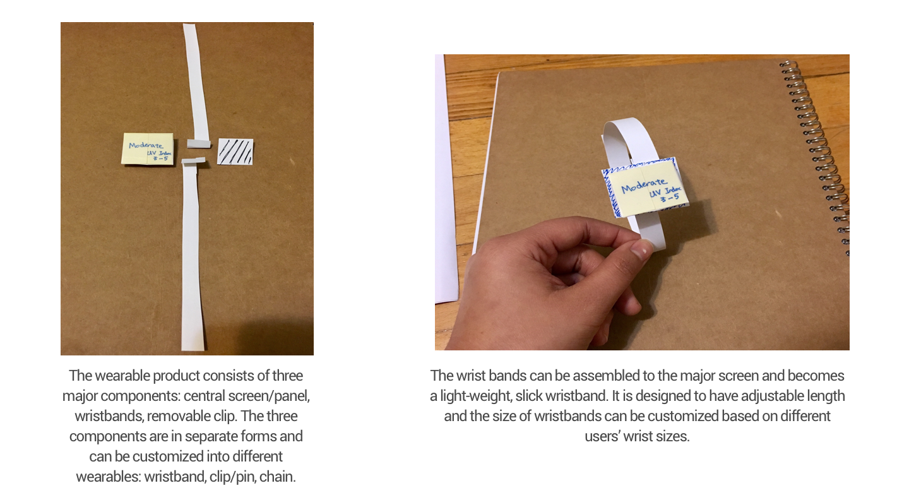Physical Prototype Draft1
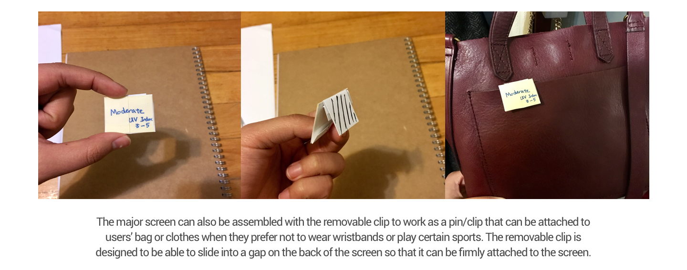Physical Prototype Draft2
To validate our research findings and the initial design ideas, we conducted a round of rapid prototyping and tested with users. The focus of this set of work was the content of the workflow and content of both the mobile application and the wearable information screen.
The first iteration was rapid prototyping on paper. We sketched mobile app interfaces with a feature page, an onboariding process, and a personal dashboard. We sketched the push notifications to users when they choose to receive notifications through cell phone. We also sketched the interface of the wearable monitor. The basic principle of designing these interfaces is to be simple and straightforward, the mobile app and the wearable should require as less interaction from users as possible and provide useful reminders and important metrics at the same time.
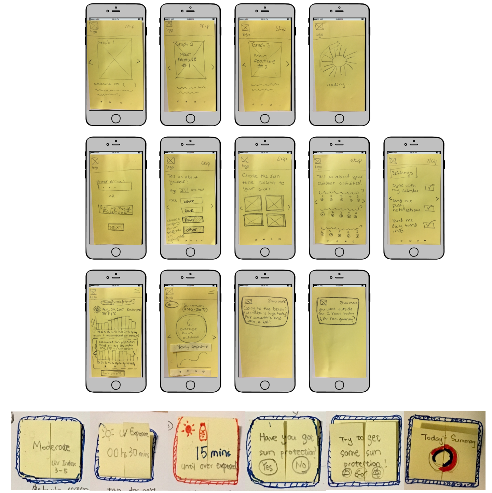Paper Prototypes of Mobile App and Wearable Monitor
Then we tested with two users with the paper prototype of both the mobile app and the wearable interface. Here are the major takeaways from the tests:
Onboarding Process:
Dashboard/Summary:
Wearable Interface:
After testing with users and further discussion, we refined the product scope and identified the key features as following:
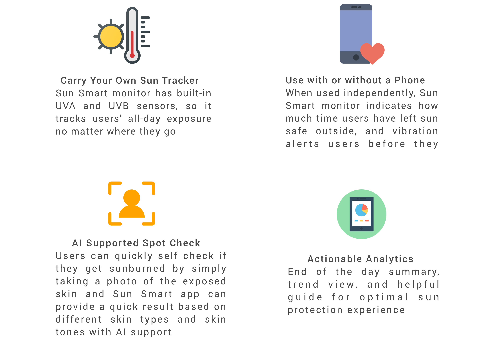Use Sun Smart Wearable Alone
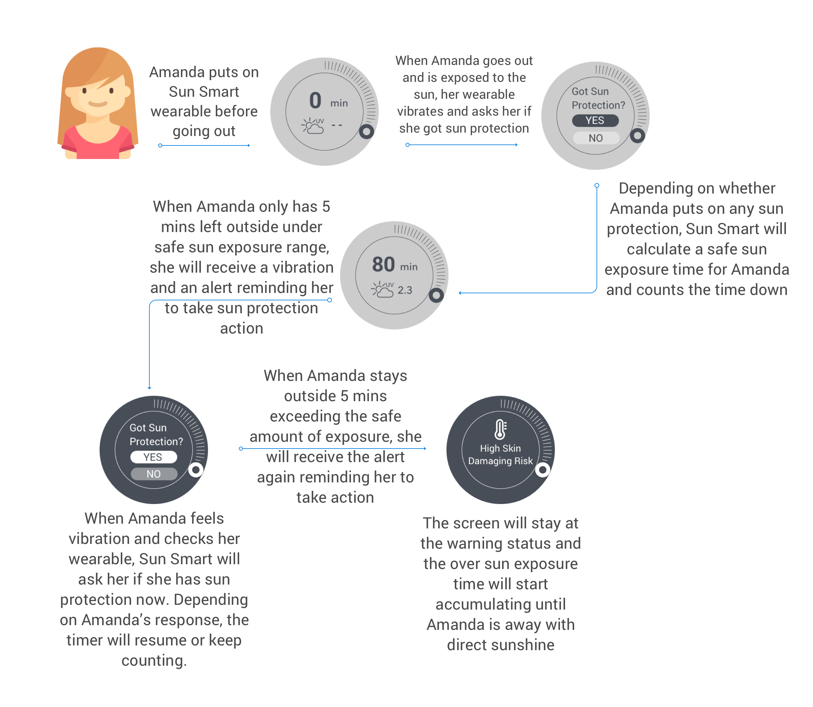Use Sun Smart Wearable with Sun Smart App
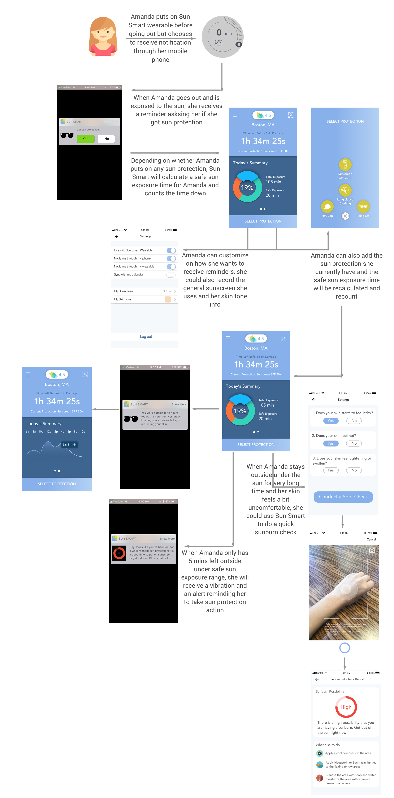Sun Smart Dashboard is designed to be simple that provides at-a-gance information with minimum amount of interactions required, yet functional enough to provide accurate sun exposure calculation and reminders.
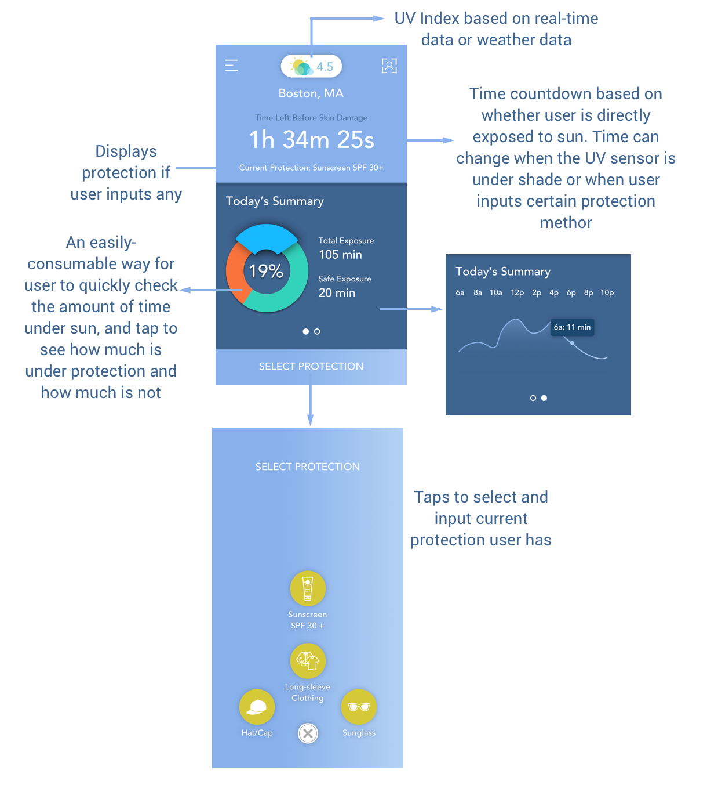Sun Smart helps users do quick self-evaluation for sunburn symptons and provide user with actionable tips to recover from sunburns.
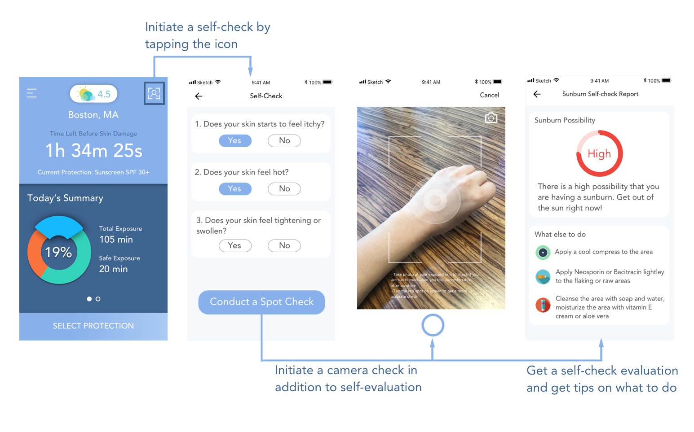Depending on different settings and devices user chooses to receive notifications from, user can receive a set of different notifications/reminders throughout the day based on user's actual sun exposure time and activities.
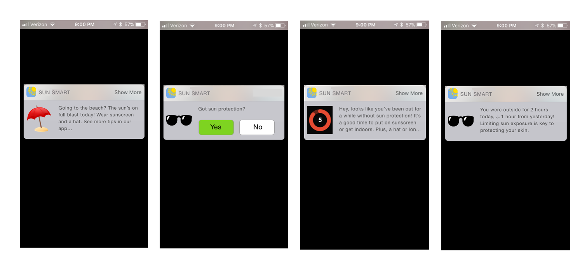Moving forward, we will do further testings with users in terms of interactions with Sun Smart wearable and the mobile app. We also want to further develop the 3-D prototype for the wearable and explore differnt possibilities in material, form, power sources, etc.
While we think promoting better sun protection habits could be one of the important aspects for a UV monitor. Sun Smart could be further refined and be applied with extended functionalities. We envision Sun Smart could help people get enough sunshine and vitamin D while taking appropriate sun protection methods. We would also want to explore how Sun Smart can be used by children and let parents monitor and apply sun protection measures. Furthermore, Sun Smart can also potentially be used as powerful gardening tool that helps garden owners keep track of different UV needs for different plants.